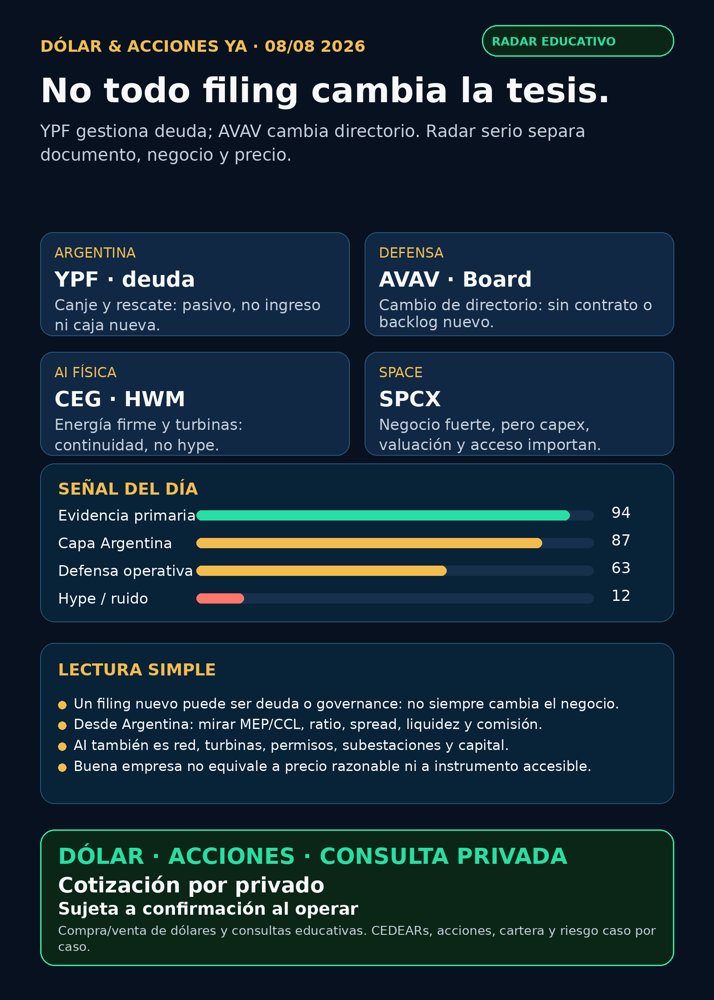

No todo filing cambia la tesis.
YPF, AVAV y AI física: recibos verificables, riesgo visible y cero promesas.
Texto WhatsApp
Placa del día

Dólar & Acciones YA — 08/08
Fecha de edición: 2026-08-08. **Corte:** 11:34 ART, America/Argentina/Mendoza.
Regla de lectura: research educativo; no es recomendación personalizada de compra/venta.
Lectura simple del día
Hoy la señal útil es metodológica: un filing nuevo no siempre es un catalizador de negocio. YPF presentó una operación de deuda; AeroVironment presentó un cambio de directorio. Son documentos reales, pero ninguno prueba más ventas, backlog o una mejora automática de precio. Un radar serio separa documento, negocio, instrumento y valuación antes de entusiasmarse.
Las señales están ordenadas por evidencia y valor educativo, no por orden de compra. Buena empresa ≠ buena inversión al precio actual ≠ instrumento accesible desde Argentina ≠ tamaño correcto de una cartera.
Capa Argentina: dólar, MEP/CCL y CEDEARs
- BlueLytics: blue vendedor **ARS 1.525** y oficial vendedor **ARS 1.521**, actualización del **07/08 19:45 ART**. Fuente.
- CriptoYa: MEP AL30 24hs **ARS 1.515,40** y CCL AL30 24hs **ARS 1.599,46**, con timestamp de cierre del **07/08 16:59 ART**. No son una cotización intradiaria de IOL/PPI. Fuente.
- En criollo: un CEDEAR representa una fracción de un activo de afuera. Antes de operar importan ratio, CCL implícito, libro, volumen, spread, plazo y comisión. Un ticker extranjero no prueba que sea líquido ni accesible desde Argentina.
Accionable local Argentina: YPF es emisor local, pero especie, plazo, volumen y costos se validan en el broker. **Accionable internacional/global:** `AVAV`, `CEG`, `HWM` y `SPCX` requieren confirmar mercado, liquidez, fiscalidad y broker. **No accionable directo:** `RVII` sigue sin EFFECT/listing, NAV, holdings, liquidez ni acceso Argentina verificados.
Tesis central
El filtro vale tanto como la noticia. La infraestructura AI sigue siendo una historia física —generación, turbinas, red, transformadores, cooling, permisos y capital—, pero no se puede transformar cualquier filing en “contrato AI”. Lo mismo vale para defensa: un cambio de directorio no es un contrato, y una operación de deuda no es flujo de caja operativo.
Radar de hoy — evidencia nueva
1. Energía Argentina — YPF: gestión de pasivo, no catalizador operativo
- Qué pasó: YPF informó el rescate anticipado de las Notas Clase XXXV, valor nominal **USD 139.894.182**, tasa fija **6,25%**, vencimiento 27/02/2027. El 07/08 emitió Notas Clase XLIII adicionales y aceptó la entrega de las Clase XXXV como pago en especie.
- Lectura en criollo: es una operación de refinanciación/canje de deuda: cambia el perfil del pasivo. **No** prueba ingresos nuevos, caja cobrada, producción adicional ni una mejora automática de la acción.
- Riesgo a monitorear: términos finales, costo financiero, vencimientos, uso de caja y la ejecución del plan operativo de YPF.
- Fuente primaria: YPF 6-K, 07/08.
- Estado: **en radar / señal financiera documental**, no recomendación.
2. Defensa/aeroespacial — AeroVironment (AVAV): governance no reemplaza contrato
- Qué pasó: el 8-K informó que Charles Thomas Burbage no buscará reelección y que la compañía designó a Mr. Ruppert para el Board; el comunicado se adjuntó como Exhibit 99.1.
- Lectura en criollo: es un hecho de governance. No contiene un contrato nuevo, backlog, guidance operativo o evidencia fresca de integración BlueHalo/counter-UAS que permita elevar la tesis de defensa.
- Riesgo a monitorear: integración, controles contables, contratos y backlog. Defensa real se mide por presupuesto, ejecución, márgenes y entregas; no por una novedad de directorio.
- Fuente primaria: AVAV 8-K, 07/08.
- Estado: **revisado sin señal operativa fuerte**.
3. AI física, energía firme y space — continuidad, no repetir por repetir
El barrido SEC de hoy detectó formularios de ownership, prospectos y documentos de capital para CEG, `CRCL`, `NVDA`, `GOOGL`, `LLY` y `HOOD`. Ninguno aportó una primaria operativa más fuerte que los resultados ya verificados el 06–07/08. Por eso no se inventa una “novedad”:
CEG: sigue en seguimiento por 920 MW de PPAs de 15–20 años y avances regulatorios de Crane; el filing no identifica esos PPAs como contratos AI. SEC EX-99.1.HWM: sigue como radar industrial por Q2: ingresos USD 2.547 millones (+24%), defensa aeroespacial +11% y turbinas de gas +38%. SEC EX-99.1.SPCX: sigue en radar por su operación, no como instrumento obvio: Q2 reportó ingresos USD 7.800 millones (+92%) y pérdida neta **USD 541 millones**. Falta resolver valuación, capex, liquidez y acceso local. SEC EX-99.1.
Estado: continuidad estructural. No es una orden de compra ni un motivo para perseguir precio.
Watchlist y recibo de cobertura
- AI infra / semis:
NVDA, `TSM`, `MU`, `GOOGL/GOOG`, `AAPL`, `PLTR`, `ASML`, `AVGO`, `SNDK` y `CBRS` revisados. Sin primaria operativa nueva que supere la evidencia vigente. - Energía / grid / power hardware:
CEG, `GEV`, Siemens Energy (`ENR.DE`), Hitachi/Hitachi Energy, HD Hyundai Electric, Hyosung, Virginia Transformer y Delta Star revisados. El segundo peaje de AI sigue siendo electricidad física, pero no apareció una primaria nueva suficiente hoy. Corea/OTC sigue como **radar global**; Virginia Transformer y Delta Star son privadas/no accionables directas. - Energía Argentina:
YPF, Pampa, TGS y Central Puerto revisados. La señal nueva verificable es la operación de pasivo de YPF; no se confunde con rendimiento operativo. - Pharma/GLP-1:
LLY, `NVO`, `PFE`, `MRK`, `AMGN` y `AZN` revisados. Sin catalyst regulatorio primario nuevo en este corte. Replimune y Moderna siguen **no verificados** y fuera de titulares. - Defensa / guerra física:
AVAV, `GE`, `RTX`, `LMT`, `NOC`, `GD`, `KTOS`, `BA`, `ITA/XAR` revisados. AVAV aportó governance, no contrato; HWM conserva la señal industrial más sólida del corte previo. - Space / private wrappers:
RKLBrevisado sin primaria nueva. El supuesto contrato SB-AMTI por USD 397 millones continúa **no verificado**. `RVI`, `DXYZ`, `ARKVX`, `AGIX`, `XOVR`, `VCX`, FAPMI/Forge y `RVII` no se elevan sin NAV, premium/descuento, holdings, fees, liquidez y acceso comprobables. - Autonomía / physical AI: Tesla, Waymo/Alphabet, Uber, Zoox/Amazon y Joby revisados sin señal regulatoria/comercial primaria nueva suficiente.
- Crypto gobernado / fintech:
CRCLy `HOOD` revisados. Formularios de ownership no equivalen a thesis de precio. Stablecoins se tratan como rails, reservas y regulación; no como casino de tokens.
Red flags / hype para ignorar
- No convertir una refinanciación de YPF en “ingreso” o en caja nueva.
- No vender el cambio de Board de AVAV como mejora de backlog o contrato de defensa.
- No llamar contratos AI a los PPAs de CEG si la primaria no identifica a esas contrapartes.
- No publicar el supuesto contrato RKLB/SB-AMTI sin issuer, DoD o SEC contemporáneo.
- No presentar SpaceX/SPCX, wrappers privados o tickers coreanos como fáciles de ejecutar desde Argentina sin instrumento, acceso y liquidez probados.
Qué mirar después
- YPF: términos de las Clase XLIII, perfil de vencimientos y si aparece información operativa material, separada de deuda.
- AVAV: contratos, integración BlueHalo, backlog, controles contables y guidance; no tomar governance como sustituto.
- CEG/HWM/SPCX: contratos, órdenes, capex, backlog y ejecución; el precio y la disponibilidad se evalúan después, no antes.
- Argentina: MEP/CCL, ratio CEDEAR, spread, libro, comisión, horizonte y riesgo antes de cualquier decisión humana.
Portfolio/base Mi Simulación
La cartera de Ricardo fue liquidada, devuelta y terminada el 24/06. No hay posiciones activas ni P&L real que reportar. Este radar sirve para vigilar una próxima compra con nuevo inversor, no para inventar rendimiento de una cartera cerrada.
Servicio privado
Dólar · Acciones · Consulta privada. Si querés comprar o vender dólares, entender CEDEARs, revisar riesgo o pensar una estrategia personal, se ve por privado y caso por caso. Cotización sujeta a confirmación al momento de operar.
Disclaimer
Esto es research informativo para decisión humana. No es asesoramiento financiero personalizado ni instrucción de compra/venta.